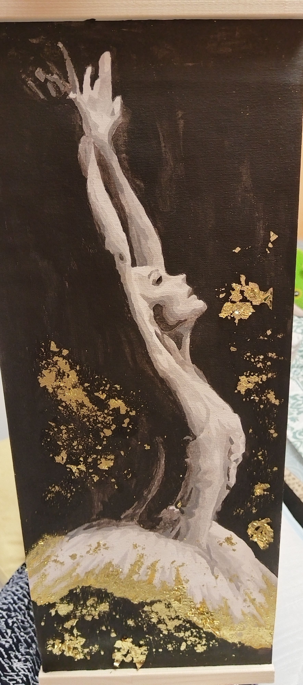
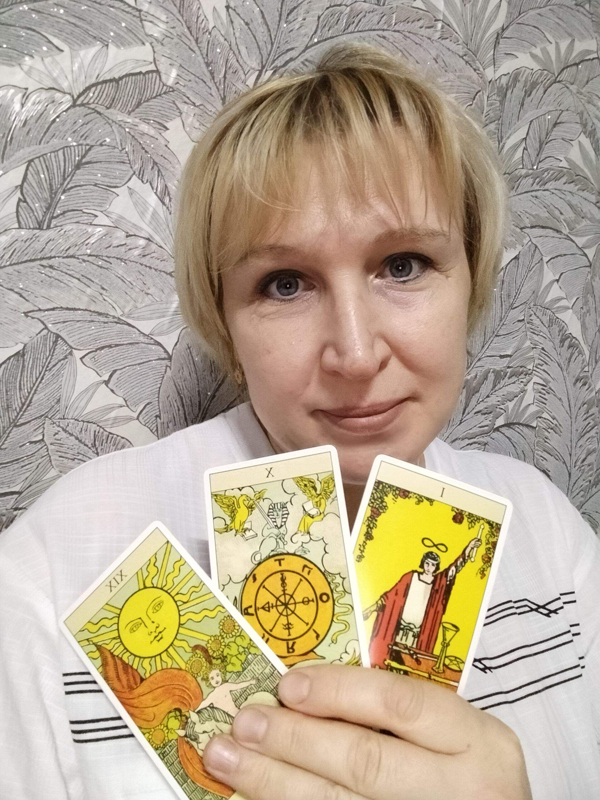

ТП
ТОП!
1 августа, 2025, 15:00
Добро Пожаловать в ТОП!


23
4


ТП
ТОП!
1 августа, 2025, 15:00
Добро Пожаловать в ТОП!
23
4
АВА
АВА
6 декабря, 2025, 18:30
Мои картины по номерам
15
1
Жр
Жрица
4 декабря, 2025, 23:34
🔮 ТАРОЛОГИЯ — ПОНИМАЕМ БУДУЩЕЕ ЧЕРЕЗ ПРОШЛОЕ И НАСТОЯЩЕЕ 🔮 Хотите разобраться в ситуации? Знаете проблему, но не видите пути решения? Ищете понимание своего пути и направления движения? Тогда вам ко мне! 🎯 Я помогаю людям находить гармонию внутри себя и ясность в отношениях, карьере, финансовой сфере, духовном развитии и многом другом. ✨ Что я предлагаю: - Расклад на отношения (партнёрские, семейные, дружеские); - Прогностический расклад на ближайшее будущее; - Анализ текущего состояния вашей жизненной ситуации; - Консультация по выбору оптимального карьерного пути; - Ответы на конкретные вопросы касательно вашего будущего. ✏️ Моя работа построена на уважительном подходе и конфиденциальности всех деталей вашей жизни. Сеанс проходит комфортно и дружелюбно, мы вместе ищем наилучшие сценарии развития событий. 🚪 Запишитесь на консультацию прямо сейчас и получите скидку на первый визит! Откройте дверь в мир понимания и гармонии! ✨
17
3